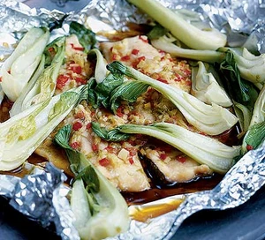
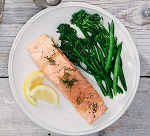
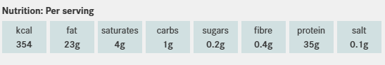

Fish stew
Ingredients
- 1 tbsp olive oil
- 81 tsp fennel seeds
- 2 carrots, diced
- 2 celery sticks, diced
- 2 garlic cloves, finely chopped
- 2 leeks, thinly sliced
- 400g can chopped tomatoes
- 500ml hot fish stock, heated to a simmer
- 2 skinless pollock fillets (about 200g)
- 85g raw shelled king prawns
Recipe
- STEP 1
Heat the oil in a large pan, add the fennel seeds,
carrots, celery and garlic, and cook
for 5 mins until starting to soften. Tip in the leeks,
tomatoes and stock, season and bring to the boil,
then cover and simmer for 15-20 mins until the vegetables
are tender and the sauce has thickened and reduced slightly. - STEP 2
Add the fish, scatter over the prawns and cook
for 2 mins more until lightly cooked.
Ladle into bowls and serve with a spoon.
Thai style steamed fish
Ingredients
- 2 trout fillets, each weighing about 140g/5oz
- a small knob of fresh root ginger, peeled and chopped
- 1 small garlic clove, chopped
- 1 small red chilli, seeded and finely chopped
- grated zest and juice of 1 lime
- 3 baby pak choi, each quartered lengthways
- 2 tbsp soy sauce
Recipe
- Nestle the fish fillets side by side
on a large square of foil and scatter the
ginger, garlic, chilli and lime zest over them.
Drizzle the lime juice on top and then scatter
the pieces of pak choi around
and on top of the fish. - Pour the soy sauce over the pak choi
and loosely seal the foil to make a package,
making sure you leave space at the top for the steam to circulate
as the fish cooks. - Steam for 15 minutes.
(If you haven’t got a steamer, put the parcel
on a heatproof plate over a pan of gently
simmering water, cover with a lid and steam.)

Baked Salmon
Ingredients
- 4 skinless salmon fillets
- 1 tbsp olive oil or melted butter
- chopped herbs, lemon slices and
steamed long-stem broccoli, to serve
Recipe
- Heat the oven to 180C/160C fan/gas 4.
Brush each salmon fillet with the oil
or butter and season well. - Put the salmon fillets in an ovenproof dish.
Cover if you prefer your salmon to be tender,
or leave uncovered if you want the flesh to roast slightly. - Roast until just opaque and easily
flaked with a fork. Serve with a sprinkling of
chopped herbs, lemon slices and
steamed long-stem broccoli, if you like.

